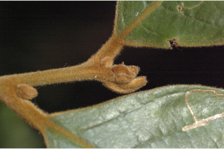
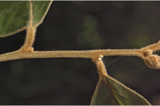
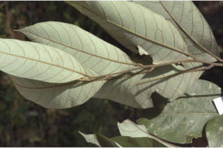
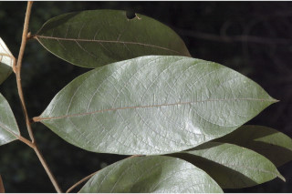
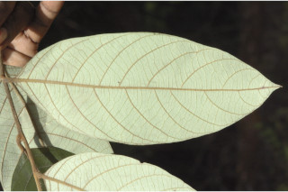
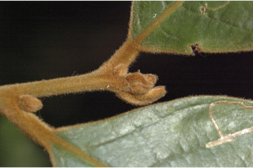
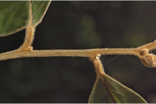
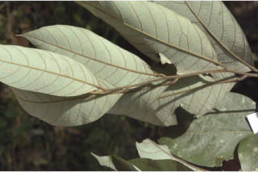
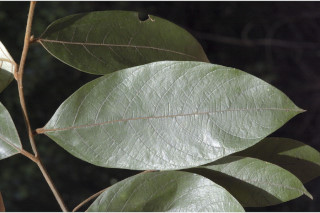
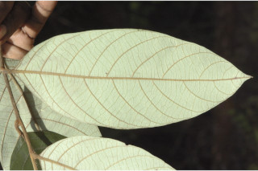

Trees up to 8 m tall.
8 ಮೀ.ವರೆವಿಗೆ ಬೆಳೆಯುವ ಮರಗಳು.
8 മീറ്റര് വരെ ഉയരമുളള മരങ്ങള്.
மரங்கள் 8 மீ. உயரம் வரை வளரக்கூடியது.
Branchlets subterete, fulvous tomentose.
ಕಿರುಕೊಂಬೆಗಳು ಉಪ-ದುಂಡಾಗಿದ್ದು ನಸುಗೆಂಪಿನಿಂದ ಕೂಡಿದ ಹಳದಿ ಬಣ್ಣದ ದಟ್ಟ ಮೃದು ತುಪ್ಪಳದಿಂದ ಕೂಡಿರುತ್ತದೆ.
കനത്തില് ഫള്വസ് രോമിലമായ, ഏതാണ്ട് ഉരുണ്ട ഉപശാഖകള്.
சிறிய நுனிக்கிளைகள் குறுக்குவெட்டுத் தோற்றத்தில் வளையம் போன்றது, உரோமங்களுடையது.
Simple, alternate, spiral; petiole 1.2 cm long, fulvous tomentose; lamina 13 x 6.5 cm, elliptic-oblong, apex sharp acuminate, base acute, nerves fulvous tomentose on both sides, glaucous beneath; midrib raised; secondary_nerves ca. 8 pairs, tertiary_nerves strong, obliquely_percurrent.
ಎಲೆಗಳು ಸರಳವಾಗಿದ್ದು ಪರ್ಯಾಯ ಹಾಗೂ ಸುತ್ತು ಜೋಡನಾ ವ್ಯವಸ್ಥೆಯಲ್ಲಿ -ರುತ್ತವೆ;ತೊಟ್ಟುಗಳು 1-2 ಸೆಂ.ಮೀ. ಉದ್ದವಿರುತ್ತದೆ ಮತ್ತು ನಸುಗೆಂಪಿನಿಂದ ಕೂಡಿದ ಹಳದಿ ಬಣ್ಣದಿಂದ ಕೂಡಿರುತ್ತದೆ; ಪತ್ರಗಳು 13 X 6.5 ಸೆಂ.ಮೀ.ವರೆಗಿನ ಗಾತ್ರ ಹೊಂದಿದ್ದು ಅಂಡವೃತ್ತ-ಚತುರಸ್ರದ ಆಕಾರ ಹೊಂದಿದ್ದು ತೀಕ್ಷ್ಣವಾದ ಮೊನಚುಳ್ಳ ಕ್ರಮೇಣ ಚೂಪಾಗುವ ತುದಿ, ಚೂಪಾದ ಬುಡ ಹೊಂದಿರುತ್ತವೆ;ಪತ್ರಗಳ ಎರಡೂ ಬದಿಗಳ ನಾಳಗಳು ನಸುಗೆಂಪಿನಿಂದ ಕೂಡಿದ ಹಳದಿ ಬಣ್ಣದ ದಟ್ಟವಾದ ಮೃದು ತುಪ್ಪಳದಿಂದ ಕೂಡಿ;ಪತ್ರದ ತಳಭಾಗ ಮಾಸಲು ಬೂದು ಹಸಿರು ಬಣ್ಣ ಹೊಂದಿರುತ್ತದೆ;ಮಧ್ಯ ನಾಳ ಪತ್ರದ ಮೇಲ್ಭಾಗದಲ್ಲಿ ಉಬ್ಬಿರುತ್ತದೆ;ಎರಡನೇ ದರ್ಜೆಯ ನಾಳಗಳು ಅಂದಾಜು 8 ಜೋಡಿಗಳಿರುತ್ತವೆ; ಮೂರನೇ ದರ್ಜೆಯ ನಾಳಗಳು ದೃಢವಾಗಿದ್ದು ಓರೆಯಾಗಿ ಎಲೆದಿಂಡಿಗೆ ಅಡ್ಡವಾಗಿ ಕೂಡುತ್ತವೆ.
ലഘുവായ ഇലകള്, ഏകാന്തര ക്രമത്തില് സര്പ്പിളമായടുക്കിയതാണ്; കനത്തില് ഫള്വസ് രോമിലമായ, ഇലഞെട്ടിന് 1.2 സെ.മീ നീളം; പത്രഫലകത്തിന് 13 സെ.മീ നീളവും 6.5 സെ.മീ വീതിയും ദീര്ഘവൃത്തീയ-ആയതാകാരവുമാണ്, പത്രാഗ്രം കൂര്ത്ത ദീര്ഘാഗ്രമാണ്; പത്രാധാരം നിശിതമാണ്, ഞരമ്പുകള് ഇരുഭാഗത്തും ഫള്വസ് രോമിലമാണ്, കീഴ്ഭാഗം നീലരാശിയുളളതാണ്; മുഖ്യസിര ഉയര്ന്നതാണ്; ഏതാണ്ട് 8 ജോഡി ദ്വിതീയ ഞരമ്പുകള്, ദൃഢമായ ചരിഞ്ഞ പെര്കറന്റ് വിധത്തിലുളള ത്രിതീയ ഞരമ്പുകള്.
இலைகள் தனித்தவை, மாற்றுஅடுக்கமானவை, சுழல் போன்று அமைந்தவை; இலைக்காம்பு 1.2 செ.மீ., நீளமானது, உரோமங்களுடையது; இலை அலகு 13 X 6.5 செ.மீ., நீள்வட்டம்-நீள்சதுர வடிவானது, அலகின் நுனி அதிக்கூரியது, அலகின் தளம் கூரியது, அலகின் இருபுறங்களிலும் நரம்புகளில் உரோமங்களுடையது, அலகின் கீழ்பரப்பு மெழுகு பூசியது போன்றது அல்லது சாம்பல் கலந்த நீல நிறமானது (க்களாக்கஸ்); மையநரம்பு மேற்பரப்பில் அலகின் பரப்பைவிட உயர்ந்தது; இரண்டாம் நிலை நரம்புகள் 8 ஜோடிகள்; மூன்றாம் நிலை நரம்புகள் தளம் நோக்கிய இணையான பெர்க்கரண்ட்.
Flowers in short axillary fulvous panicles of cymes with prominent bracts and bracteoles.
ಹೂಗಳು ಕಿರು ಗಾತ್ರದವುಳ್ಳ, ನಸುಗೆಂಪಿನಿಂದ ಕೂಡಿದ ಹಳದಿ ಬಣ್ಣ ಹೊಂದಿದ ಪ್ರಮುಖವಾದ ವೃಂತಪತ್ರಕಗಳು ಮತ್ತು ಕಿರುವೃಂತಪತ್ರಕಗಳ ಸಮೇತವಿರುವ ಅಕ್ಷಾಕಂಕುಳಿನಲ್ಲಿರುವ ಮಧ್ಯಾರಂಭಿ ಪುಷ್ಪಮಂಜರಿಯಲ್ಲಿರುತ್ತವೆ.
പൂക്കള്, പ്രമുഖമായ സഹപത്രവും സഹപത്രകവുമുളള കുറിയ കക്ഷീയ ഫള്വസ് രോമിലമായ പാനിക്കിള് സൈമുകളില് ഉണ്ടാകുന്നു.
மலர்கள் குட்டையான மஞ்சரி காம்பில், இலைக்கோணங்களில் காணப்படும் பேனிக்கிள் சைம், செதில்கள் மற்றும் சிறு செதில்களுடையவை.
Drupe; seed 1.
ಕಾಯಿಗಳು ಡ್ರೂಪ್ ಮಾದರಿಯವುಗಳಾಗಿದ್ದು ಒಂದು ಬೀಜವನ್ನು ಒಳಗೊಂಡಿರುತ್ತವೆ.
കായ, ഒറ്റവിത്തുളള ഡ്രൂപ്പ് ആണ്.
உள்ளோட்டுத்தசைகனி (ட்ரூப்); விதை ஒன்றுடையது.
 








